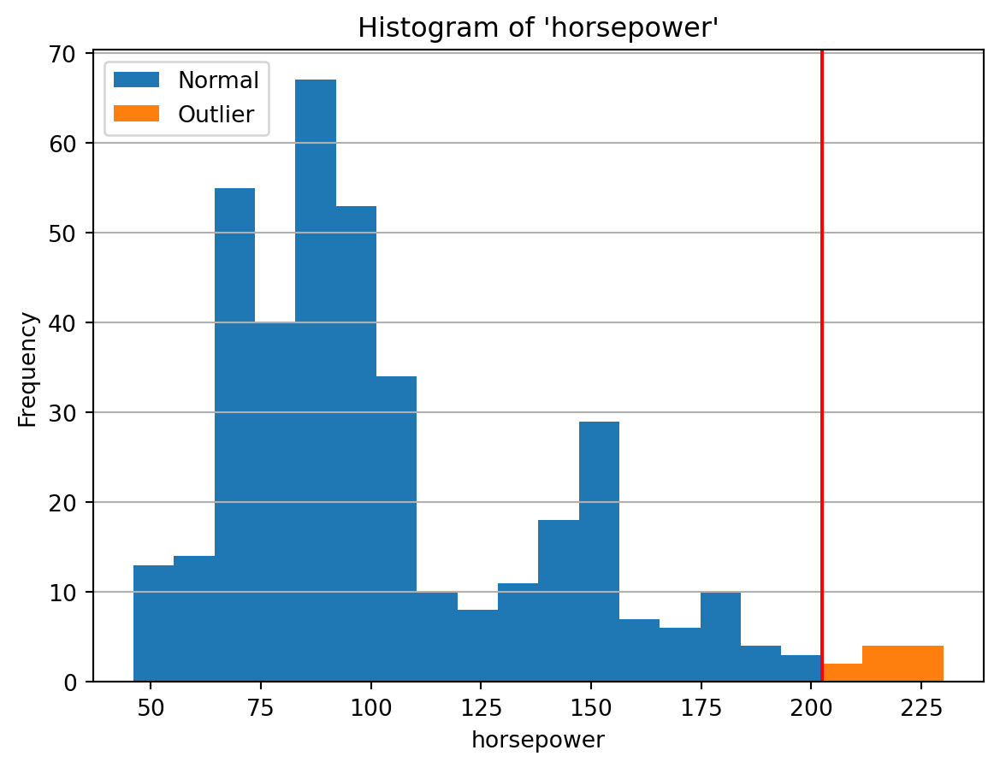
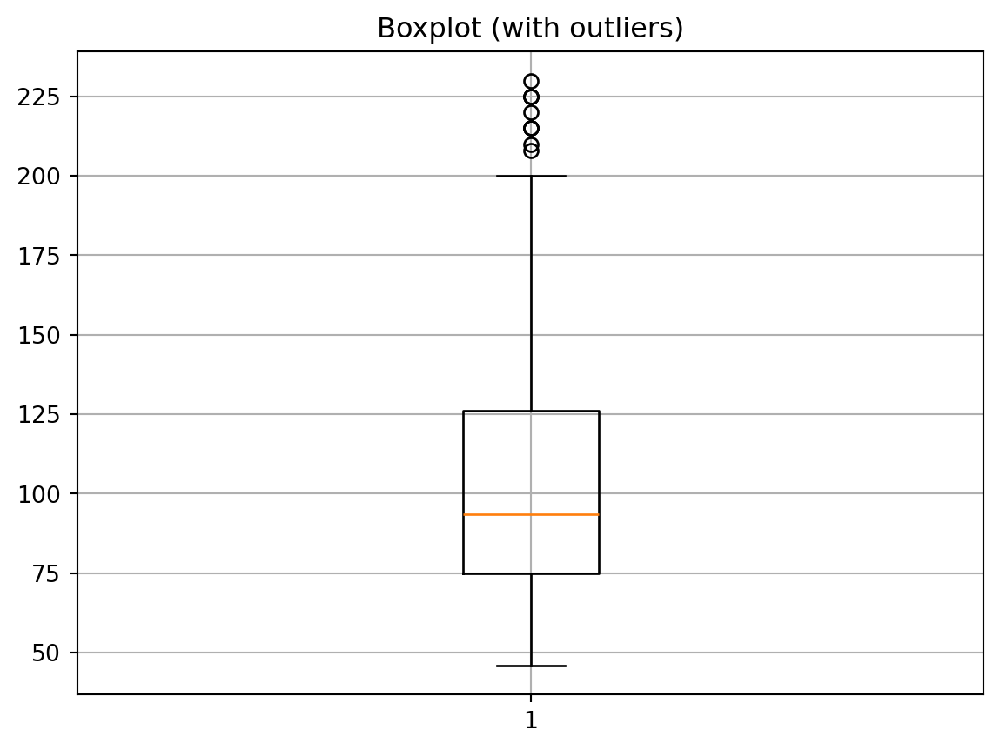
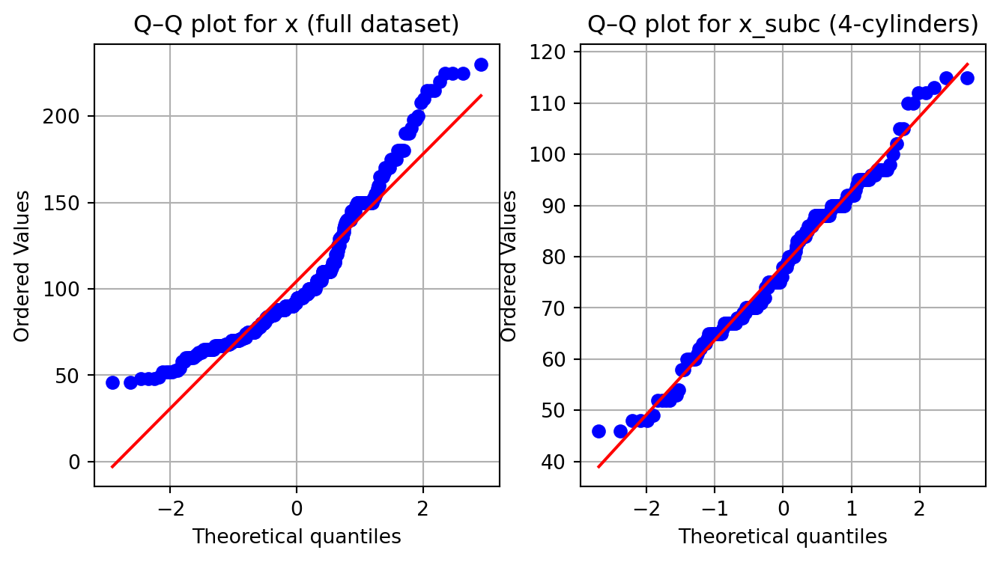
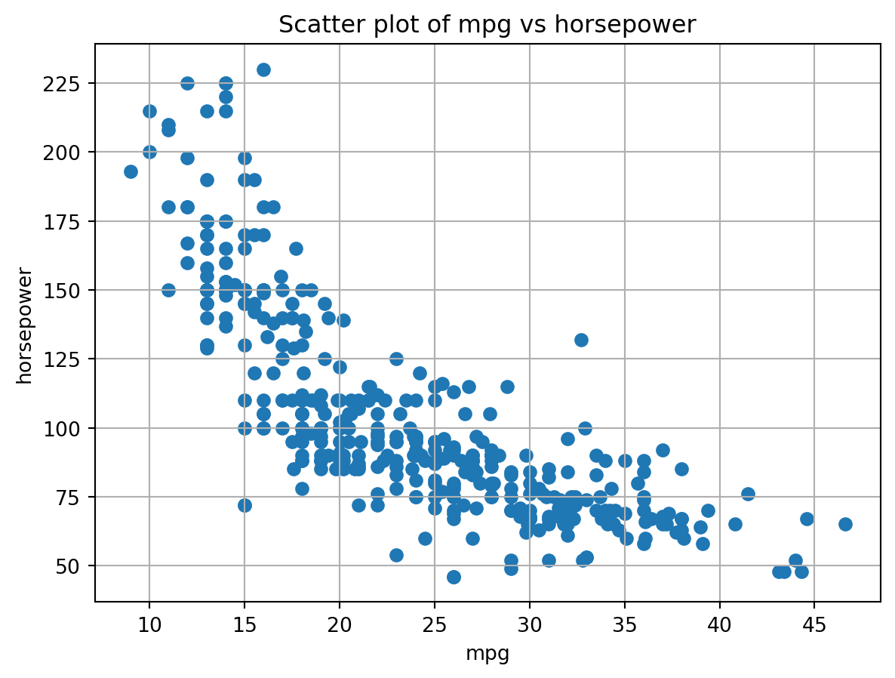

Anomaly detection (also known as outlier detection or sometimes novelty detection ) refers to identifying rare observations that differ substantially from the general pattern of the data. These anomalous instances do not align with typical behaviors, structures, or distributions present in the dataset.
Anomalies may result from natural variability, data entry errors, sensor malfunctions, fraudulent activities, or genuinely rare events. Detecting such irregularities is important across many applications, including fraud detection, system health monitoring, cybersecurity, and quality assurance.
22.1 Data Preparation
We begin by loading the mpg dataset from seaborn library, which contains 398 observations describing various vehicle characteristics, such as miles per gallon (mpg), number of cylinders (cylinders), engine displacement (displacement), horsepower (horsepower), weight (weight), and more.
import numpy as npimport pandas as pdimport seaborn as sns# Load the mpg datasetdf = sns.load_dataset('mpg').dropna()print(df.head())print(df.columns)
mpg cylinders displacement horsepower weight acceleration \
0 18.0 8 307.0 130.0 3504 12.0
1 15.0 8 350.0 165.0 3693 11.5
2 18.0 8 318.0 150.0 3436 11.0
3 16.0 8 304.0 150.0 3433 12.0
4 17.0 8 302.0 140.0 3449 10.5
model_year origin name
0 70 usa chevrolet chevelle malibu
1 70 usa buick skylark 320
2 70 usa plymouth satellite
3 70 usa amc rebel sst
4 70 usa ford torino
Index(['mpg', 'cylinders', 'displacement', 'horsepower', 'weight',
'acceleration', 'model_year', 'origin', 'name'],
dtype='object')
In the following example, we examine the distribution of the horsepower attribute. The histogram helps visually identify unusual values that may indicate measurement errors or genuinely rare vehicle types.
import matplotlib.pyplot as plt# Load datasetx = df["horsepower"]# Plot histogramfig, ax = plt.subplots()ax.hist(x, bins=20)ax.set_title("Histogram of 'horsepower'")ax.set_xlabel("horsepower")ax.set_ylabel("Frequency")ax.yaxis.grid(True)plt.show()
This visualization allows us to observe potential anomalies, such as unusually low or extremely high horsepower values, that deviate from the main concentration of the data.
22.2 Statistical Anomaly Detection
22.2.1 Detection with Five Numbers (Summary Statistics)
A common first step in anomaly detection is examining basic descriptive statistics. The five-number summary (minimum, first quartile (Q1), median, third quartile (Q3), and maximum) helps characterize the overall distribution of a variable. These statistics form the basis of boxplots and are widely used to identify unusual observations.
Next, we check whether each value falls outside the extended range.
# check the conditionslower_than_bound = x < lower_boundgreater_than_bound = x > upper_boundcond = lower_than_bound | greater_than_bound# retrieve the the data points that satisfy the conditionx_outlying = cond.map({True: 'Outlier', False: 'Normal'})# conut the data points by valueoutlier_counts = x_outlying.value_counts()print(outlier_counts)
horsepower
Normal 382
Outlier 10
Name: count, dtype: int64
Finally, let’s inspect where the outliers are, by visualizing them with normal data points in a histogram.
fig, ax = plt.subplots()# histogram with two datasetsax.hist([x[~cond], x[cond]], stacked=True, bins=20)ax.legend(['Normal', 'Outlier'])# vertical line for the upper boundax.axvline(upper_bound, color='red')ax.set_title("Histogram of 'horsepower'")ax.set_xlabel("horsepower")ax.set_ylabel("Frequency")ax.yaxis.grid(True) # grid for only y-axisplt.show()

22.2.1.2 Box Plots
A box plot is a graphical tool that summarizes the distribution of numerical data using key statistics: the median, quartiles, and whiskers. It can also visually highlight potential outliers. This makes box plots a convenient method for detecting anomalies and understanding the distribution’s spread and central tendency.
By default, plt.boxplot() displays outliers and adjusts its whiskers to extend to the most extreme non-outlying values according to the \(1.5 \times IQR\) rule.
fig, ax = plt.subplots()bplot_res_out = ax.boxplot(x) # keep this fig result for later usesax.set_title("Boxplot (with outliers)")ax.grid(True)plt.show()

Under the default configuration, the boxplot:
computes \(Q1\), \(median\), \(Q3\)
computes \(IQR = Q3 − Q1\)
extends whiskers to the highest/lowest points within \(1.5 \times IQR\)
marks points beyond the whiskers as fliers (outliers)
This means the whiskers and box boundaries may differ from the raw five-number summary obtained in the previous section.
Sometimes it is useful to visualize the entire data range rather than allowing the boxplot to exclude extreme values as outliers. In this case, the whiskers should extend all the way to the minimum and maximum values of the data.
Matplotlib allows this through the whis parameter. Setting whis=[0,100] forces the lower whisker to the 0th percentile (true minimum) and the upper whisker to the 100th percentile (true maximum), ensuring that no value is treated as an outlier.
Extracting Boxplot Statistics: The object bplot_res_out returned by plt.boxplot() stores the numerical values used in the plotted figure.
# Whisker endpoints (extreme non-outlier values)whiskers_out = [line.get_ydata()[1] for line in bplot_res_out["whiskers"]]print("Whiskers (adjusted ends):", whiskers_out)
Whiskers (adjusted ends): [46.0, 200.0]
These correspond to the extreme non-outlier values at the tips of the whiskers, not necessarily the actual min/max of the raw data if outliers are present.
Adjusted Quartiles from the Box: The box boundaries correspond to Q1 and Q3 used in the plot. We can extract them from the box coordinates:
# Adjusted quartiles (Q1 and Q3) from the boxboxes_out = []for box in bplot_res_out["boxes"]: ydata = box.get_ydata() q1 =float(np.min(ydata)) q3 =float(np.max(ydata)) boxes_out.append((q1, q3))print("Box (Q1, Q3) from plot:", boxes_out)
Box (Q1, Q3) from plot: [(75.0, 126.0)]
Because the whiskers are adjusted to exclude outliers, the whisker ends may differ from the raw min/max of the data, but the quartiles themselves (Q1, Q3) usually match the distribution’s quartiles.
Extracting Outlier (Fliers) Values: The fliers element gives direct access to the outlier points plotted:
These values correspond exactly to the circles (default marker style) displayed in the boxplot.
22.2.2 Grubbs’ Test
Grubbs’ test (a.k.a. the maximum normalized residual test or extreme studentized deviate test) is a statistical method used to decide whether a single observation is an outlier in a univariate, normally distributed dataset.
22.2.2.1 Checking Normality
Statistical tests are valid only if their assumptions are satisfied. Using a test when its assumptions are violated can lead to misleading results, and so the test should not be used in such a situation.
Since Grubbs’ test assumes the data are normally distributed, we must verify this assumption.
The horsepower values from the full dataset often do not closely follow a normal distribution. To better meet the normality condition, we can keep the data only from the vehicles with four cylinders, which tends to exhibit a distribution closer to a bell curve.
# Filter subcompact classdf_subc = df[df['cylinders'] ==4]x_subc = df_subc['horsepower']# Histogram of subcompact highway mpgplt.figure()plt.hist(x_subc, bins=25, edgecolor='black')plt.title("Histogram of 'hwy' for subcompact class")plt.xlabel("Highway MPG")plt.ylabel("Frequency")plt.grid(True)plt.show()

A Q-Q plot (quantile–quantile plot) can be used to visually check the normality of the data. A Q–Q plot compares the quantiles of the sample (i.e., observed values) to the quantiles of a theoretical normal distribution. The more similar the two distributions are, the closer the points fall to a straight reference line (e.g., the line \(y = x\)).
Here we compare Q–Q plots for the full sample (x) and the 4-cylinders subset (x_subc).
from scipy import statsfig, axs = plt.subplots(1,2, figsize=(8,4))# Q–Q plot for full datastats.probplot(x, dist="norm", plot=axs[0])axs[0].set_title("Q–Q plot for x (full dataset)")axs[0].grid(True)# Q–Q plot for subcompact classstats.probplot(x_subc, dist="norm", plot=axs[1])axs[1].set_title("Q–Q plot for x_subc (4-cylinders)")axs[1].grid(True)plt.show()
22.2.2.2 Running Grubbs’ Test
Grubbs’ test evaluates the most extreme value in the sample and tests the null hypothesis:
\(H_0\): There are no outliers in the dataset.
\(H_1\): There is exactly one outlier in the dataset.
To apply the test in Python, we will use the functions in grubbs class from the outliers package1.
1 To install, run conda install conda-forge::outlier-utils in the Terminal.
from outliers import smirnov_grubbs as grubbs# Convert to NumPy array for the outliers packagex_subc_arr = x_subc.to_numpy()# test significance levelalpha =0.1# Two-sided Grubbs' test: returns array with outlier(s) removedx_subc_clean = grubbs.test(x_subc_arr, alpha=alpha)print("Original length:\t", len(x_subc_arr))print("After Grubbs' test:\t", len(x_subc_clean))
If the length decreases, Grubbs’ test has identified an extreme value as an outlier and removed it.
If the length is unchanged, no outlier was removed.
Given \(\alpha=0.05\), this test results in the rejection of null hypothesis if the p-value is less than the alpha. This means, the probability (p-value2) that the observed outcome (e.g., the test statistic — the maximum in the dataset) would happen under the null hypothesis (e.g., the distribution of the data that doesn’t contain an outlier) is lower than \(\alpha\). If so, the maximum is removed as an outlier.
2 Read the paragraphs about the usage and misuse of p-value in p-value
22.2.2.3 Locating the Outlier
To see which value was flagged as an outlier, we can use the index and outlier helper functions. Here we focus on a potential maximum outlier:
# Index/indices of potential max outlier(s)max_idx = grubbs.max_test_indices(x_subc_arr, alpha=alpha)print("Index/indices of max outlier(s):", max_idx)# Value(s) of potential max outlier(s)max_vals = grubbs.max_test_outliers(x_subc_arr, alpha=alpha)print("Max outlier value(s):", max_vals)
Index/indices of max outlier(s): []
Max outlier value(s): []
If these functions return non-empty results, they indicate which observation(s) in the upper tail are considered outliers at the chosen significance level.
22.2.2.4 Removing the detected outlier and repeating the test
If we decide to treat the detected maximum as an outlier, we can remove it using max_test() and then re-apply the test to check for additional outliers.
# Remove the detected max outlier(s) from x_subc_arrx_subc1 = grubbs.max_test(x_subc_arr, alpha=alpha)print("Length after removing max outlier(s):", len(x_subc1))# Run max test again on the updated samplex_subc2 = grubbs.max_test(x_subc1, alpha=alpha)print("Length after second max test:", len(x_subc2))
Length after removing max outlier(s): 199
Length after second max test: 199
If the length no longer changes after repeated application, it suggests that no further maximum outliers are detected at the chosen significance level.
22.2.2.5 Testing lower-tail outliers (minimum)
If we suspect very small values may be outliers (in the lower tail), we can use the corresponding minimum tests:
# One-sided Grubbs' test for minimum outlier(s)x_subc_min_clean = grubbs.min_test(x_subc_arr, alpha=alpha)print("Length after min Grubbs' test:", len(x_subc_min_clean))# Index and value of min outlier(s), if anymin_idx = grubbs.min_test_indices(x_subc_arr, alpha=alpha)min_vals = grubbs.min_test_outliers(x_subc_arr, alpha=alpha)print("Index/indices of min outlier(s):", min_idx)print("Min outlier value(s):", min_vals)
Length after min Grubbs' test: 199
Index/indices of min outlier(s): []
Min outlier value(s): []
If these functions do not indicate any minimum outlier and the length does not change, we keep the minimum values in the dataset.
One-sided vs. Two-sided Grubbs’ tests
Two-sided test (grubbs.test)
checks for an outlier at either tail and removes the most extreme value if it is statistically significant.
when you do not know in advance whether an outlier is unusually high or low.
focus on detecting outliers only at the upper or lower tail, respectively.
when you are specifically interested in unusually high (or low) values.
22.3 Proximity-based Approaches
In the following examples for proximity-based anomaly detection, we will use two attributes from the mpg dataset: mpg and horsepower. Similar to the previous examples, a few points lie far away from most others, making them suitable for illustrating distance- and density-based methods.
# Select the two attributesX = df[["mpg", "horsepower"]]# Scatter plot to visualize the raw pointsfig, ax = plt.subplots()ax.scatter(X["mpg"], X["horsepower"])ax.set_title("Scatter plot of mpg vs horsepower")ax.set_xlabel("mpg")ax.set_ylabel("horsepower")ax.grid(True)plt.show()

For illustration purposes—especially to highlight differences in distance and density—we remove duplicated rows and then scale the data. Scaling ensures that both variables contribute equally when computing proximity-based metrics.
from sklearn.preprocessing import StandardScaler# Remove duplicated rowsX_unique = X.drop_duplicates().reset_index(drop=True).copy()print(X_unique.shape)# Scale the data (standardization: mean=0, sd=1)scaler = StandardScaler()X_scaled = scaler.fit_transform(X_unique)# Convert back to DataFrame for convenienceX_scaled = pd.DataFrame(X_scaled, columns=["mpg_scaled", "horsepower_scaled"])print(X_scaled.head())
This is a model-free anomaly detection approach: it does not require constructing an explicit model of the “normal” class. Instead, it uses proximity in feature space.
The key idea in the k-nearest neighbors (k-NN) approach is:
A normal instance is expected to have a small distance to its k-th nearest neighbor.
An anomalous instance is likely to have a large distance to its k-th nearest neighbor.
We will apply a distance-based approach with \(k = 4\) on the standardized variables mpg_scaled and horsepower_scaled to obtain an anomaly score for each point.
from sklearn.neighbors import NearestNeighbors# Use the standardized features (mpg and horsepower)X_np = X_scaled.to_numpy()knn =3+1# one extra for itself# Create an operator that finds nearest neighborsnbrs = NearestNeighbors(n_neighbors=knn, metric="euclidean").fit(X_np)# distances[i, j] = distance from point i to its j-th nearest neighbordistances, indices = nbrs.kneighbors(X_np)df_distances = pd.DataFrame(distances, columns=[f'{k}th'for k inrange(knn)])print(df_distances.head())
# Anomaly score --- Possible appraoch 2: average distance to the k nearest neighborsanomaly_score2 = df_distances.iloc[:, 1:].mean(axis=1)print(anomaly_score2[:5])
We can visualize the anomaly score on the 2D feature space. Points with larger scores (farther from their 4th neighbor) are more likely to be anomalous.
To inspect the most anomalous observations, we can combine the scores with the original (unscaled) variables and examine the points with the largest scores:
# Combine original and scaled values with anomaly scoresanom_df = pd.concat([X_unique, X_scaled], axis=1)anom_df["anomaly_score"] = anomaly_score1# Top-5 points with highest anomaly scoresanom_df.nlargest(5, "anomaly_score")
mpg
horsepower
mpg_scaled
horsepower_scaled
anomaly_score
273
32.7
132.0
1.089354
0.779141
0.875066
119
15.0
72.0
-1.170577
-0.792395
0.567753
264
46.6
65.0
2.864102
-0.975741
0.533387
52
23.0
54.0
-0.149139
-1.263855
0.488444
92
16.0
230.0
-1.042897
3.345982
0.468579
These top-ranked points are the most distant from their k-th nearest neighbor in the standardized space and are thus candidates for being anomalies.
22.3.2 Local Outlier Factor
Local outlier factor (LOF) is a local density-based anomaly detection algorithm. The locality is defined by the k nearest neighbors of each point.
The main idea is:
Points in dense regions (high local density) are likely to be normal.
Points in sparse regions (low local density), compared to their neighbors, are likely to be outliers.
The LOF value is a relative density measure: higher LOF scores (relative to 1) indicate stronger outliers.
We use scikit-learn’s LocalOutlierFactor with n_neighbors = 5 (analogous to minPts = 5) to compute LOF-based anomaly scores for the standardized mpg and horsepower variables.
from sklearn.neighbors import LocalOutlierFactor# Local Outlier Factor model (density-based)lof = LocalOutlierFactor( n_neighbors=5, metric="euclidean")# fit_predict returns -1 for outliers and 1 for inliers (not used directly here)labels = lof.fit_predict(X_scaled)# LOF scores: more negative => more outlyingneg_lof_scores = lof.negative_outlier_factor_# Convert to a positive anomaly score (larger = more anomalous)lof_score =-neg_lof_scores# Attach LOF scores to the original (unscaled) dataX_lof = X_unique.copy()X_lof["lof_score"] = lof_scoreX_lof.head()
mpg
horsepower
lof_score
0
18.0
130.0
1.018421
1
15.0
165.0
0.994101
2
18.0
150.0
1.031296
3
16.0
150.0
0.961915
4
17.0
140.0
0.989596
We can visualize the LOF anomaly scores on the original mpg–horsepower space, using color to indicate how “outlying” each point is:
Points with higher LOF scores (more toward red) are locally less dense than their neighbors and are thus more likely to be anomalies. The overall pattern may look similar to the k-NN distance-based anomaly scores, but LOF incorporates relative density, so subtle differences can appear, especially in regions with varying density.
You can also inspect the most anomalous points numerically:
X_lof.nlargest(5, "lof_score")
mpg
horsepower
lof_score
119
15.0
72.0
3.288526
273
32.7
132.0
2.700032
52
23.0
54.0
1.978439
85
21.0
72.0
1.881252
241
23.0
125.0
1.866649
22.4 Related Reading/Reference
Chapter 9.1, 9.2, 9.3, 9.4 in Introduction to Data Mining, 2nd ed. (Tan et al., 2019)